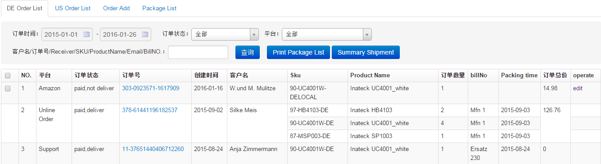
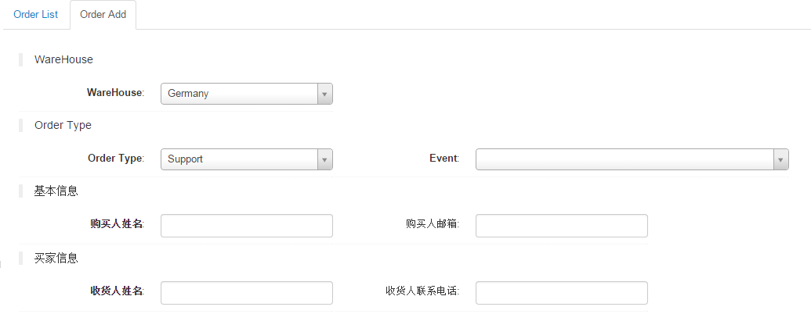
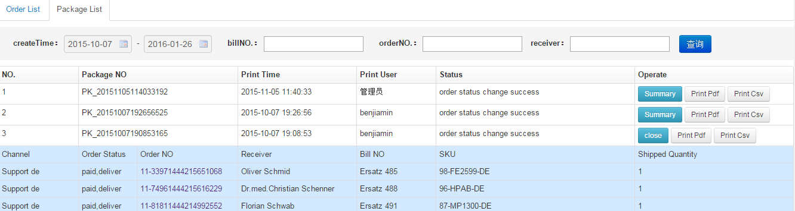

自发货订单管理
自发货订单管理包含德国Ebay订单，德国线下订单，新增Support、Support_Voucher和Review订单,德国和美国亚马逊本地帖自发货订单，其中Ebay订单和亚马逊订单ERP自动同步到自发货订单。
DE Order List:

- Print Package list：勾选单个或多个复选框，点击Print Package list按钮打印，生成PDF发货单,每个订单生产相应订单类型账单号,同时更改相应订单状态，ERP新增订单及时修改订单状态，亚马逊和Ebay订单会等待ERP系统下次抓取订单时再更新订单状态。打印成功订单前复选框置空，无法再次勾选。
- Summary Shipment:点击Summary Shipment按钮，分产品汇总一段时间发货数量及其明细订单发货详情，默认排除所有老产品汇总
- 亚马逊和Ebay未发货的订单支持编辑地址操作，点击operate列edit链接进入编辑界面，修改地址结果不会影响原亚马逊或Ebay订单地址，只修改订单自发货地址
- 账单号生成规则：亚马逊和Ebay订单，不少于八位数字账单号，不足补零；Support和Support_Voucher订单，以Ersatz开头，尾数从1开始递增生成账单号；线下订单，以Mfn开头，尾数从1开始递增生成账单号；Review订单，以Test开头，尾数从1开始递增生成账单号；
US Order List:
操作及说明同DE Order List。
Order Add:

新增自发货订单
- Order Type:Support、Support_Voucher和Review,Support_Voucher是支持上传凭证的替代订单，打印发货单时除了Support_Voucher订单，其他两种订单会由系统操作自动关闭相应事件，Support_Voucher订单需手动关闭相应事件
- Event:新建的订单是和事件一一对应的，选择相应事件可以创建订单相应信息，event是必选的
- 支持编辑未发货的测试和替代订单
Package List:

查看所有发货单及其包含订单信息
- Summary:点击查看发货单包含所有订单信息，点击close关闭相应展开信息
- Print Pdf:下载已生成的Pdf发货单文件
- Print Csv:生成排除包货单中地址1-3包含packstation、paketshop和postfiliable内容订单csv文件
- 根据条件搜索包货单信息，查询到的订单有特殊颜色标注